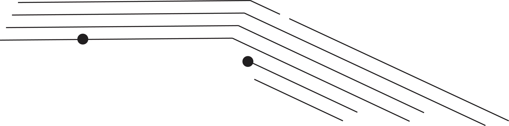
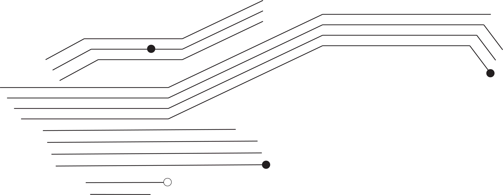
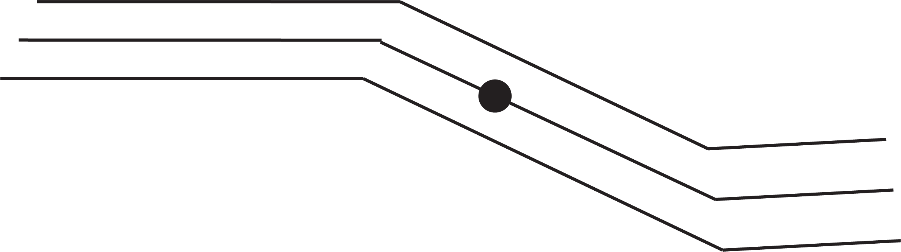
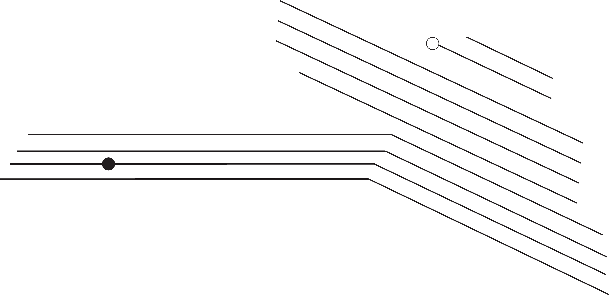
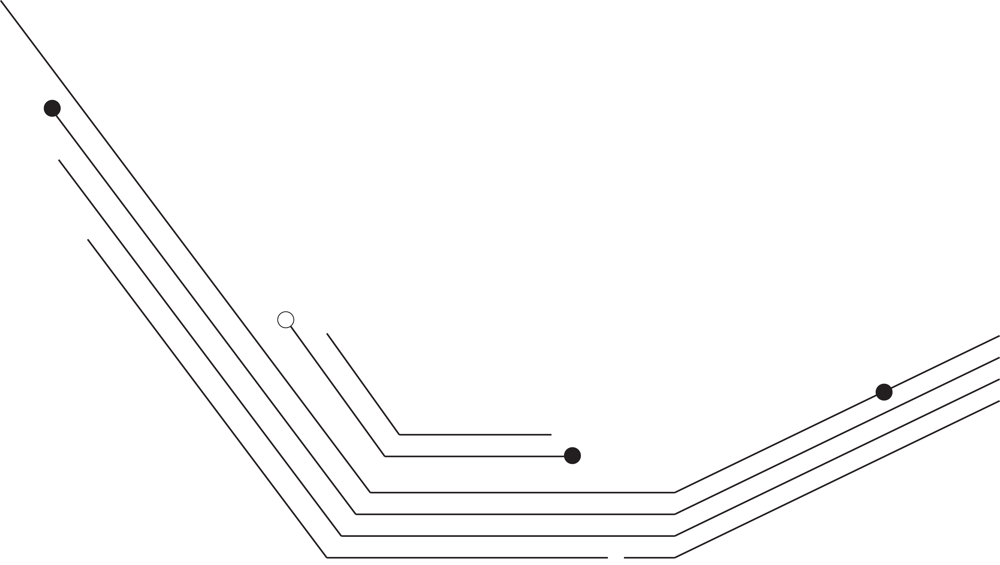
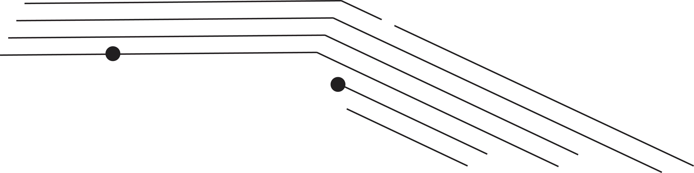
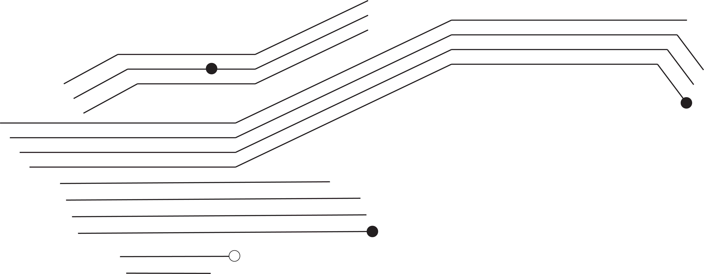
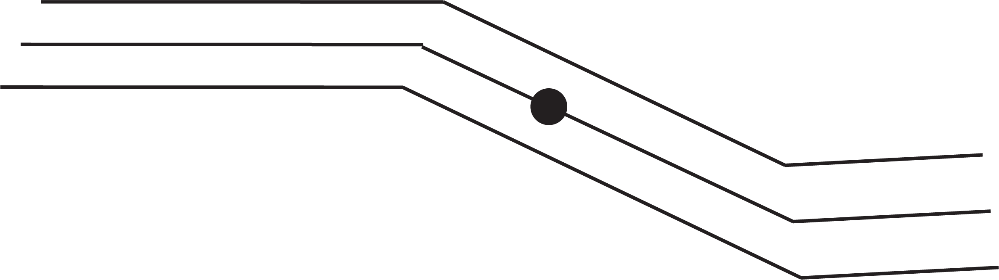
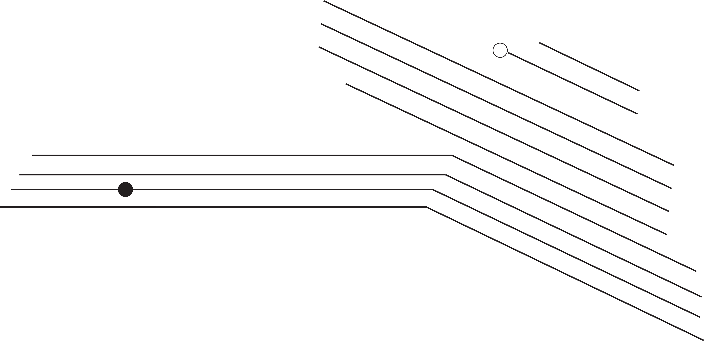
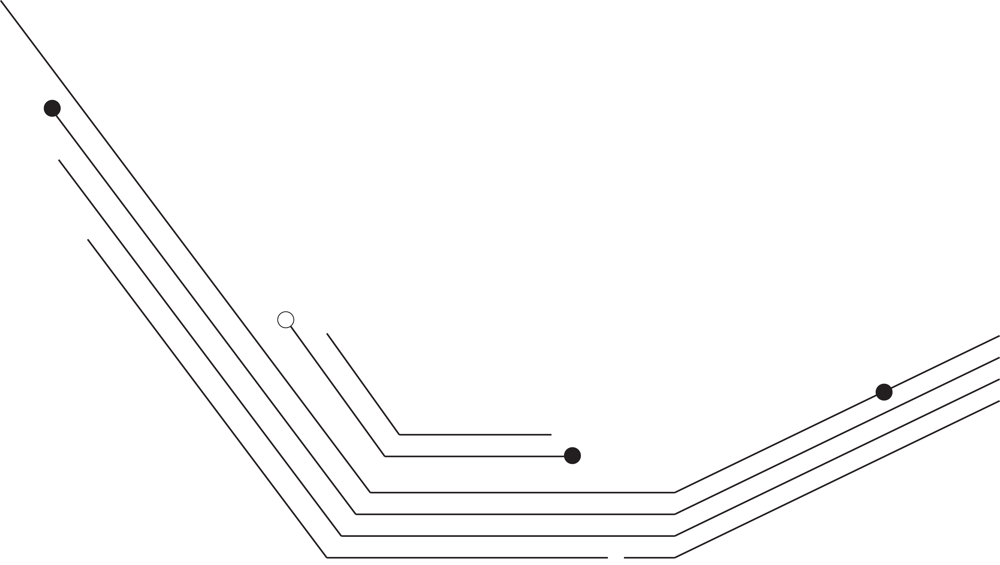

Join ITP for our first Tech 4 Social Good Day, an unconference-inspired event consisting of explorations, talks, panels and workshops on the intersection of social good and technology! The event starts on January 31 @ 6-9 pm with a kickoff reception, keynote and art show. February 1 @ 10am - 6:00 pm is a full day of workshops, discussions and talks. Explore the links below for more info!
This conference is organized by Tech & Society, a student club at ITP. Thank you to our sponsors: ITP, Tisch GSO and the NYU Office of Programming, Partnerships and Community Engagemnet in Brooklyn.